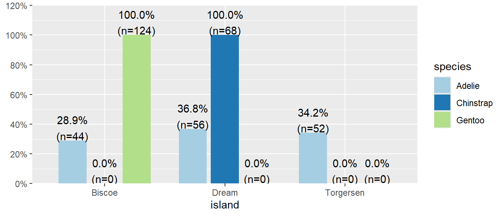
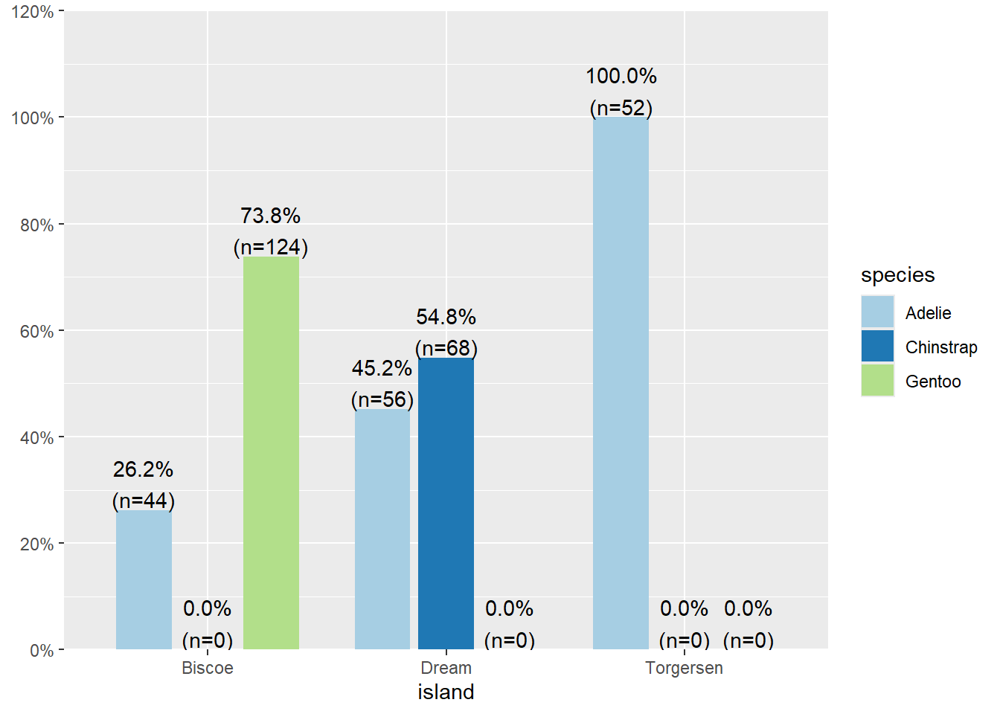
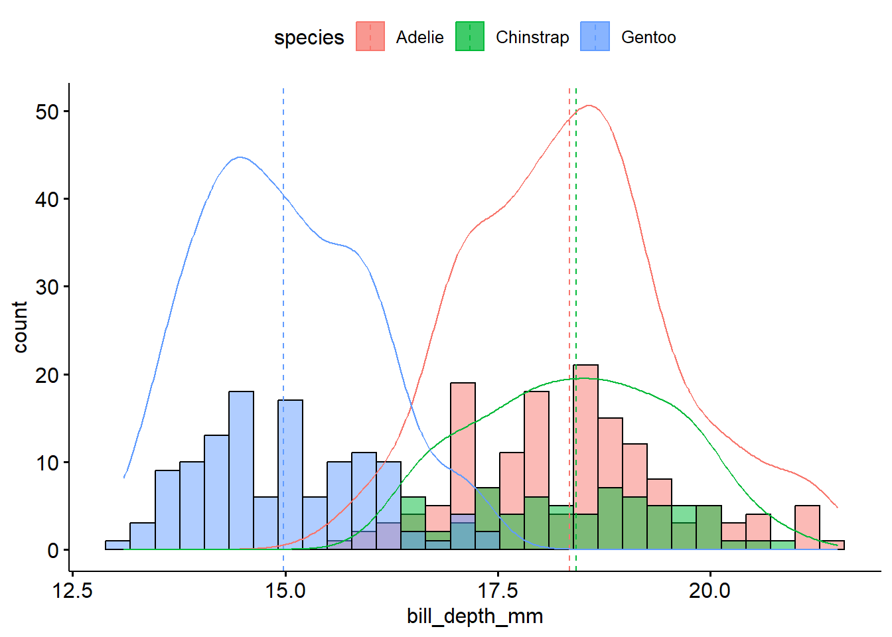
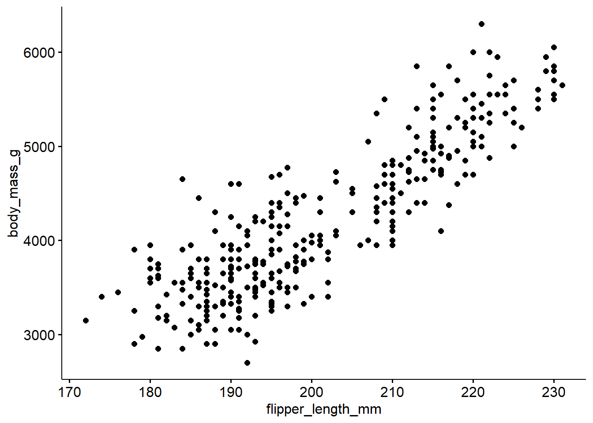

library(tidyverse); library(ggpubr); library(gtsummary)
library(palmerpenguins); library(sjPlot)
pen <- penguinsDescribing Relationships between variables
lec05a
Bivariate Association between 2 variables
Naming conventions
| Response | Explanatory |
|---|---|
| y | x |
| outcome | predictor |
| dependent variable | independent variable |
| covariate | |
| feature |
Model notation: \(y \sim x\)
Types of combinations
- Categorical response and categorical explanatory variable. (C ~ C)
- Quantitative response and categorical explanatory variable. (Q ~ C)
- Quantitative response and quantitative explanatory variable. (Q ~ Q)
C ~ C
Categorical Response vs Categorical Explanatory
table(pen$species, pen$island)
Biscoe Dream Torgersen
Adelie 44 56 52
Chinstrap 0 68 0
Gentoo 124 0 0table(pen$species, pen$island) |>
prop.table(margin=2) |> round(2)
Biscoe Dream Torgersen
Adelie 0.26 0.45 1.00
Chinstrap 0.00 0.55 0.00
Gentoo 0.74 0.00 0.00- All of the 52 penguins on Torgersen island are the Adelie species.
- 74% of penguins on Biscoe island are Gentoo.
plot_xtab(pen$island, grp=pen$species,
show.total = FALSE)
Watch your margins
Always double check your work
One of the most common places for a mistake when creating a plot or a table between two categorical variables is by not paying close attention to the choice of denominator. And then also confirming the interpretation matches the table, which matches the plot.
Watch your margins
Row Percents
table(pen$species, pen$island) |>
prop.table(margin=1) |> round(2)
Biscoe Dream Torgersen
Adelie 0.29 0.37 0.34
Chinstrap 0.00 1.00 0.00
Gentoo 1.00 0.00 0.0029% of Adelie penguins are on Biscoe Island.
Column Percents
table(pen$species, pen$island) |>
prop.table(margin=2) |> round(2)
Biscoe Dream Torgersen
Adelie 0.26 0.45 1.00
Chinstrap 0.00 0.55 0.00
Gentoo 0.74 0.00 0.0074% of penguins on Biscoe island are Gentoo.
Distribution of Islands within each species
pen %>% select(island, species) %>%
tbl_summary(by = "species")| Characteristic | Adelie, N = 1521 | Chinstrap, N = 681 | Gentoo, N = 1241 |
|---|---|---|---|
| island | |||
| Biscoe | 44 (29%) | 0 (0%) | 124 (100%) |
| Dream | 56 (37%) | 68 (100%) | 0 (0%) |
| Torgersen | 52 (34%) | 0 (0%) | 0 (0%) |
| 1 n (%) | |||
Distribution of Species on each Island
pen %>% select(island, species) %>%
tbl_summary(by = "island")| Characteristic | Biscoe, N = 1681 | Dream, N = 1241 | Torgersen, N = 521 |
|---|---|---|---|
| species | |||
| Adelie | 44 (26%) | 56 (45%) | 52 (100%) |
| Chinstrap | 0 (0%) | 68 (55%) | 0 (0%) |
| Gentoo | 124 (74%) | 0 (0%) | 0 (0%) |
| 1 n (%) | |||
Distribution of islands for each species
plot_xtab(pen$species, grp=pen$island,
margin = "row", show.total = FALSE)29% of Adelie penguins are on Biscoe Island.
Distribution of species on each island.
plot_xtab(pen$island, grp=pen$species,
margin = "row", show.total = FALSE)
74% of penguins on Biscoe island are Gentoo.
Q ~ C
Quantitative Response vs Categorical Explanatory
n, nean, median, sd, IQR of the quantitative variable for each level of the categorical level.
pen %>% group_by(species) %>%
summarize(n=n(),
mean = mean(bill_depth_mm, na.rm = TRUE),
median = median(bill_depth_mm, na.rm = TRUE),
sd = sd(bill_depth_mm, na.rm = TRUE),
IQR = IQR(bill_depth_mm, na.rm = TRUE))pen %>% group_by(species) %>%
summarize(n=n(),
mean = mean(bill_depth_mm, na.rm = TRUE),
median = median(bill_depth_mm, na.rm = TRUE),
sd = sd(bill_depth_mm, na.rm = TRUE),
IQR = IQR(bill_depth_mm, na.rm = TRUE))# A tibble: 3 6
species n mean median sd IQR
<fct> <int> <dbl> <dbl> <dbl> <dbl>
1 Adelie 152 18.3 18.4 1.22 1.5
2 Chinstrap 68 18.4 18.4 1.14 1.90
3 Gentoo 124 15.0 15 0.981 1.5 Gentoo penguins have lower average bill depth compared to Adelie or Chinstrap (15.0mm vs 18.3 and 18.4mm respectively). Chinstrap however have a larger IQR at 1.9 compared to 1.5 for the others.
Overlaid density plots
gghistogram(pen,
x = "bill_depth_mm", fill = "species",
add_density = TRUE, add="mean")
Side by side boxplots
ggviolin(pen,
x="species", y = "bill_depth_mm",
color = "species", add = c("mean", "boxplot"))
The distribution of bill depth are fairly normal for each species, with some higher end values causing a slight right skew for Adelie and Gentoo.
More code but nice alternative to violins.
library(ggdist) # for the "half-violin" plot (stat_slab)
ggplot(pen, aes(x=bill_depth_mm, y=species, fill=species)) +
stat_slab(alpha=.5, justification = 0) +
geom_boxplot(width = .2, outlier.shape = NA) +
geom_jitter(alpha = 0.5, height = 0.05) +
stat_summary(fun="mean", geom="point", col="red", size=4, pch=17) +
theme_bw() +
labs(x="Bill depth (mm)", y = "Species") +
theme(legend.position = "none")
Q ~ Q
Quantitative Response vs Quantitative Explanatory
cor(pen$flipper_length_mm, pen$body_mass_g,
use="pairwise.complete.obs")[1] 0.8712018The correlation coefficient \(r\) is a measure of the strength and direction of a linear relationship between two variables.
- \(|r| > 0.6\) Strong relationship
- \(0.4 \leq |r| < 0.6\) Moderate relationship
- \(|r| < 0.4\) Weak to no relationship
Note: These values are guidelines and subject to variability within different disciplines ref
ggscatter(pen,
x="flipper_length_mm", y = "body_mass_g")
ggscatter(pen,
x="flipper_length_mm", y = "body_mass_g",
add = "loess", conf.int = TRUE)
The relationship between flipper length and body mass in penguins is relatively linear, but there may be possible clustering on a third variable. There appears to be two groups below and above a flipper length of about 205mm.
Must include the direction (positive or negative), the strength quantified using \(r\), and the form (linear vs non-linear)
The penguin flipper length (mm) has a strong, positive, and reasonably linear correlation with body mass (g), r=0.87.